Aula 24. 3 tipos gráficos para visualizar distribuições no R
Violin, Ridgeline e Boxplot com Jitter além do boxplot padrão
Democratização
Esta aula foi construída para que você escolha o gráfico certo para comunicar distribuições com precisão. Os dados usados são o conjunto
CO2, disponível no R base. Todo o código está funcional e pronto para reproduzir.

Acompanhe o Café com R

Objetivos da aula
- Compreender o que o boxplot padrão não comunica sobre uma distribuição
- Interpretar e construir violin plots com
geom_violin() - Interpretar e construir ridgeline plots com
geom_density_ridges() - Interpretar e construir boxplot com jitter com
geom_jitter() - Comparar os três gráficos com o mesmo dataset e decidir qual usar
Instalação dos pacotes
Bloco 1
O que o boxplot não mostra
O boxplot resume cinco números
O boxplot representa exatamente cinco estatísticas: mínimo, primeiro quartil (Q1), mediana, terceiro quartil (Q3) e máximo.
O que ele não registra:
- A forma da distribuição entre Q1 e Q3
- A presença de dois ou mais picos de frequência (bimodalidade)
- A concentração de observações dentro do IQR
- O tamanho da amostra de cada grupo
- A assimetria interna dentro de cada quartil
Dois datasets com estatísticas resumidas idênticas podem ter distribuições completamente distintas. O boxplot não diferencia os dois.
Código: dois datasets com boxplots idênticos
set.seed(42)
# Dataset A: distribuição unimodal simétrica
dist_a <- tibble(
grupo = "A",
valor = rnorm(200, mean = 50, sd = 10))
# Dataset B: distribuição bimodal
# mesma média e desvio padrão que A, mas com dois picos
dist_b <- tibble(
grupo = "B",
valor = c(rnorm(100, mean = 40, sd = 5),
rnorm(100, mean = 60, sd = 5)))
dados_demo <- bind_rows(dist_a, dist_b)
# Verificar: as estatísticas resumidas são quase idênticas
dados_demo |>
group_by(grupo) |>
summarise(
media = round(mean(valor), 1),
mediana = round(median(valor), 1),
dp = round(sd(valor), 1),
q1 = round(quantile(valor, 0.25), 1),
q3 = round(quantile(valor, 0.75), 1))Output: estatísticas resumidas idênticas
# A tibble: 2 × 6
grupo media mediana dp q1 q3
<chr> <dbl> <dbl> <dbl> <dbl> <dbl>
1 A 49.7 49.8 9.7 43.9 56.3
2 B 50.1 51.7 11.2 39.9 59.7- Média, mediana, desvio padrão e quartis são praticamente idênticos entre os dois grupos.
Código: boxplots indistinguíveis
dados_demo |>
ggplot(aes(x = grupo, y = valor, fill = grupo)) +
geom_boxplot(alpha = 0.85, width = 0.4) +
scale_fill_manual(values = c(
"A" = cores_cafe["azul_escuro"],
"B" = cores_cafe["marrom"])) +
labs(
title = "Os dois boxplots parecem idênticos",
subtitle = "Mesma mediana, mesmo IQR, mesma amplitude",
x = NULL, y = "Valor",
caption = "Jennifer Lopes | Café com R") +
tema +
theme(legend.position = "none")Gráfico: boxplots indistinguíveis
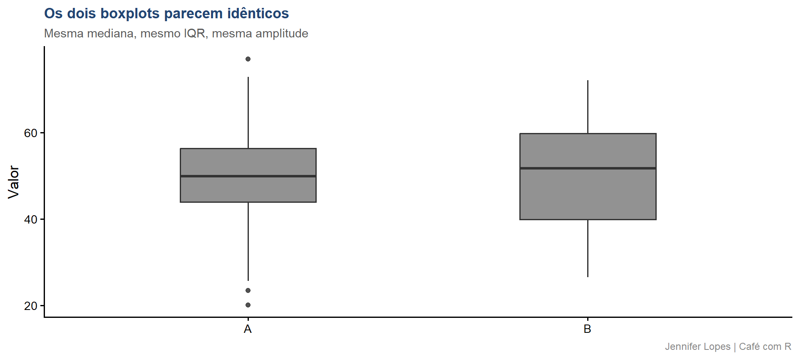
Código: violin revela a diferença
dados_demo |>
ggplot(aes(x = grupo, y = valor, fill = grupo)) +
geom_violin(alpha = 0.85) +
scale_fill_manual(values = c(
"A" = cores_cafe["azul_escuro"],
"B" = cores_cafe["marrom"])) +
labs(
title = "O violin revela o que o boxplot escondeu",
subtitle = "Grupo A: unimodal simétrico | Grupo B: bimodal",
x = NULL, y = "Valor",
caption = "Jennifer Lopes | Café com R") +
tema +
theme(legend.position = "none")Gráfico: violin revela a diferença
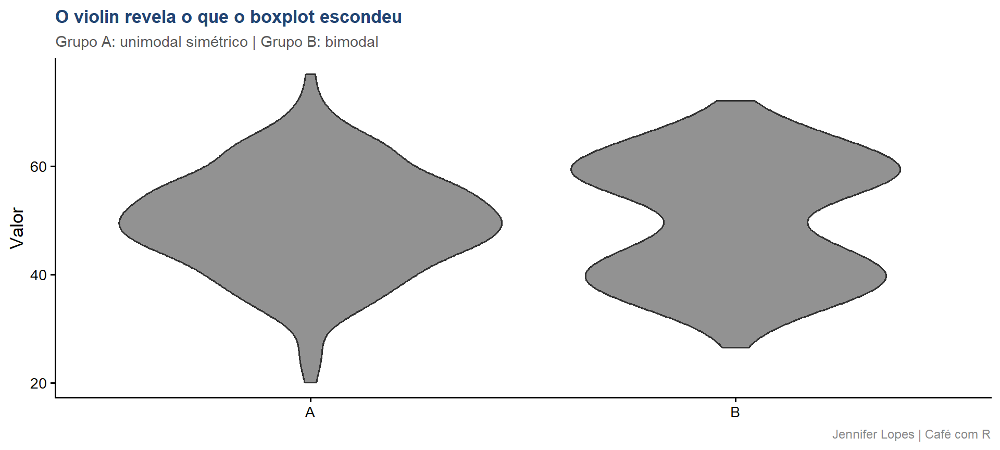
O grupo B tem dois picos de frequência.
O boxplot não mostrava isso.
As quatro perguntas que o boxplot não responde
| Pergunta analítica | Gráfico indicado |
|---|---|
| A distribuição tem um pico ou dois? | Violin plot |
| Como se comparam muitos grupos simultaneamente? | Ridgeline plot |
| Quantas observações existem em cada grupo? | Boxplot com jitter |
| A distribuição é simétrica dentro de cada quartil? | Violin plot |
Bloco 2
Violin plot
Conceito: violin plot
O violin plot é construído a partir de uma estimativa de densidade de kernel (KDE). A densidade é calculada ao longo do eixo y e espelhada para os dois lados, formando a silhueta do violino.
- A largura em qualquer ponto do violino representa a densidade de observações naquele valor
- Onde o violino é mais largo, há mais observações concentradas
- Onde o violino é mais estreito, há menos observações
- Os picos do violino correspondem aos modos da distribuição
O violin não mostra observações individuais. Ele mostra a densidade estimada da distribuição inteira.
Como interpretar um violin plot
Leitura vertical:
- Extensão total = amplitude dos dados
- Ponto mais largo = moda (valor mais frequente)
- Dois pontos largos = distribuição bimodal
- Forma simétrica = distribuição simétrica
Leitura horizontal:
- Largura proporcional à densidade
- Violino estreito em toda extensão = distribuição uniforme
- Violino muito estreito nas extremidades = poucas observações nos extremos
- Violino com “cintura” = distribuição bimodal
Código: violin básico com CO2
co2 |>
ggplot(aes(x = Type, y = uptake, fill = Type)) +
geom_violin(alpha = 0.85) +
scale_fill_manual(values = c(
"Quebec" = cores_cafe["azul_escuro"],
"Mississippi" = cores_cafe["marrom"])) +
labs(
title = "Absorção de CO2 por origem da planta",
subtitle = "Distribuição estimada por densidade de kernel",
x = NULL,
y = "Absorção de CO2 (umol/m²/s)",
caption = "Jennifer Lopes | Café com R") +
tema +
theme(legend.position = "none")Gráfico: violin básico com CO2
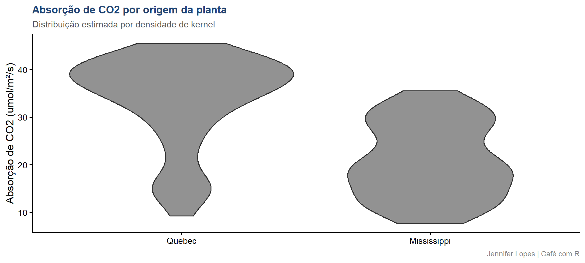
Interpretação: violin básico com CO2
O que o violin revela sobre Quebec e Mississippi:
Quebec tem um violino mais largo na parte superior, indicando alta concentração de absorção em valores elevados. A distribuição é assimétrica negativa: a maioria das plantas absorve muito.
Mississippi tem o violino mais largo no centro e na parte inferior, indicando que a maioria das plantas absorve pouco. A cauda superior é estreita.
As duas distribuições têm formas completamente distintas, o que não seria visível em um boxplot simples.
Código: violin + boxplot interno + média
co2 |>
ggplot(aes(x = Type, y = uptake, fill = Type)) +
geom_violin(alpha = 0.75, color = "white") +
geom_boxplot(
width = 0.12, fill = "white",
outlier.shape = NA) +
stat_summary(
fun = mean, geom = "point",
shape = 18, size = 3.5,
color = cores_cafe["azul_escuro"]) +
scale_fill_manual(values = c(
"Quebec" = cores_cafe["azul_claro"],
"Mississippi" = cores_cafe["marrom"])) +
labs(
title = "Absorção de CO2 por origem",
subtitle = "Violino = distribuição | Caixa = IQR | Losango = média",
x = NULL, y = "Absorção de CO2 (umol/m²/s)",
caption = "Jennifer Lopes | Café com R") +
tema +
theme(legend.position = "none")Gráfico: violin + boxplot interno + média
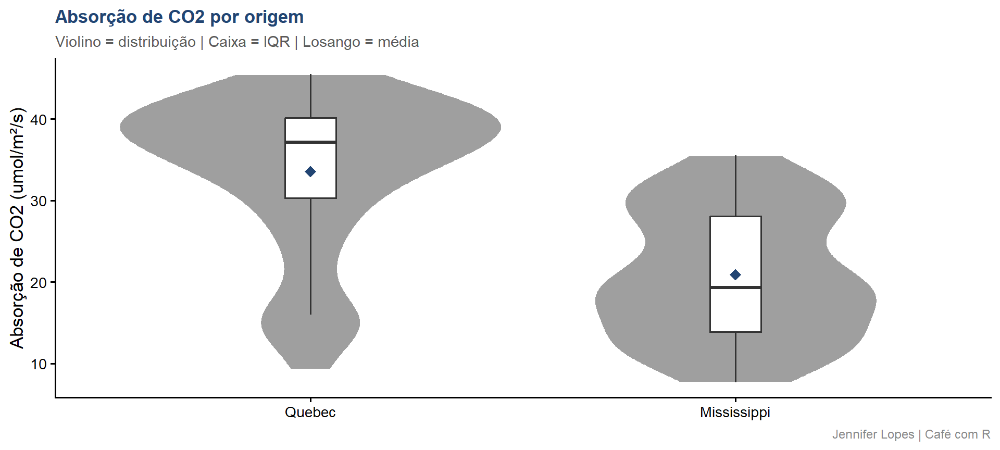
Interpretação: o que cada camada adiciona
Violino: mostra a forma da distribuição. Onde há mais observações, onde há menos, se há bimodalidade.
Boxplot interno: localiza a mediana e o IQR dentro da forma do violino. Permite leitura precisa de posição sem perder a forma.
Losango (média): quando a média está acima da mediana, a distribuição é assimétrica positiva. Quando está abaixo, assimétrica negativa. A distância entre os dois indica o grau de assimetria.
Tip
Para Quebec, a média está abaixo da mediana, confirmando assimetria negativa: existe uma cauda inferior que puxa a média para baixo.
Código: efeito do parâmetro bw
# bw controla a largura de banda da estimativa de densidade
# Valor menor: mais detalhes, risco de ruído
# Valor maior: mais suave, risco de perder estrutura real
p1 <- co2 |>
ggplot(aes(x = Type, y = uptake, fill = Type)) +
geom_violin(bw = 2, alpha = 0.85) +
scale_fill_manual(values = unname(cores_cafe)[1:2]) +
labs(title = "bw = 2 (detalhado)", x = NULL,
y = "Absorção (umol/m²/s)") +
tema + theme(legend.position = "none")
p2 <- co2 |>
ggplot(aes(x = Type, y = uptake, fill = Type)) +
geom_violin(bw = 10, alpha = 0.85) +
scale_fill_manual(values = unname(cores_cafe)[1:2]) +
labs(title = "bw = 10 (suavizado)", x = NULL, y = NULL) +
tema + theme(legend.position = "none")
p1 | p2Gráfico: efeito do parâmetro bw
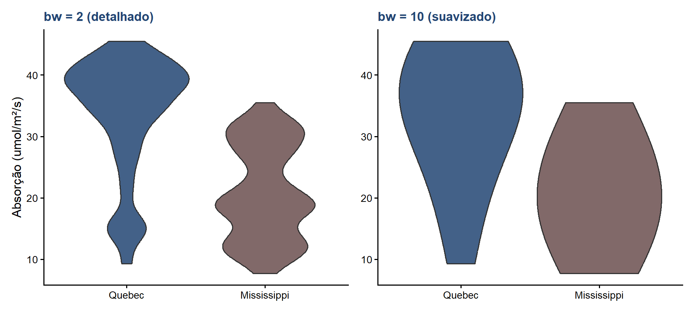
bwmuito pequeno cria picos que não existem nos dados.bwmuito grande apaga estrutura real.O valor padrão do
ggplot2usa a regra de Silverman, que é um ponto de partida adequado para a maioria dos casos.
Bloco 3
Ridgeline plot
Conceito: ridgeline plot
O ridgeline plot empilha curvas de densidade de múltiplos grupos ao longo do eixo y, com sobreposição parcial controlada entre elas.
- Cada faixa representa a distribuição de um grupo
- A altura da curva em cada ponto representa a densidade
- O parâmetro
scalecontrola o grau de sobreposição entre grupos - Com
scale = 1, as curvas não se sobrepõem. Comscale > 1, as curvas do grupo superior se sobrepõem às do grupo inferior
É o gráfico mais eficiente para comparar distribuições de muitos grupos simultaneamente, algo que o violin torna difícil visualmente quando há mais de quatro ou cinco grupos.
Como interpretar um ridgeline plot
- O pico de cada curva indica o valor mais frequente do grupo
- Curvas com dois picos indicam bimodalidade no grupo
- Curvas largas e baixas indicam distribuição dispersa
- Curvas altas e estreitas indicam distribuição concentrada
- A posição relativa dos picos entre grupos mostra se os grupos diferem em tendência central
- A sobreposição entre curvas adjacentes indica similaridade entre grupos
Código: ridgeline básico com CO2
library(ggridges)
# Combinar Type e Treatment para criar quatro grupos
co2 |>
mutate(grupo = paste(Type, Treatment, sep = "\n")) |>
ggplot(aes(x = uptake, y = grupo, fill = Type)) +
geom_density_ridges(
alpha = 0.75, scale = 0.9,
color = "white") +
scale_fill_manual(values = c(
"Quebec" = cores_cafe["azul_escuro"],
"Mississippi" = cores_cafe["marrom"])) +
labs(
title = "Absorção de CO2 por origem e tratamento",
subtitle = "Cada faixa representa a distribuição de um grupo",
x = "Absorção de CO2 (umol/m²/s)",
y = NULL,
caption = "Jennifer Lopes | Café com R") +
tema +
theme(legend.position = "none")Gráfico: ridgeline básico com CO2
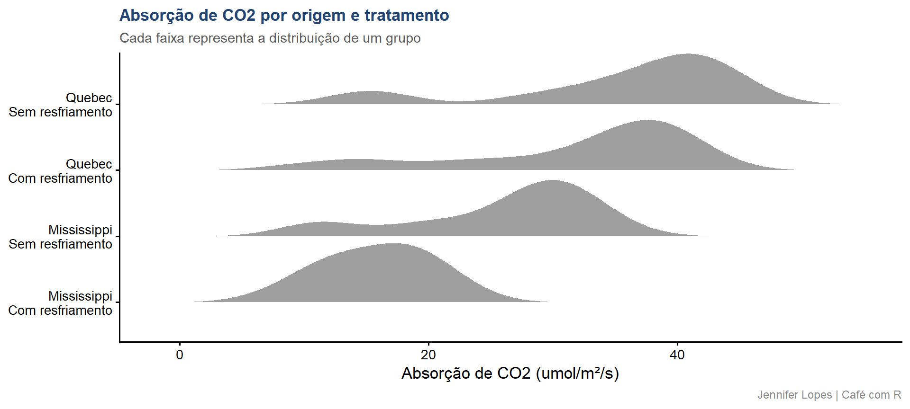
Interpretação: ridgeline básico com CO2
O que o ridgeline revela sobre os quatro grupos:
- Quebec sem resfriamento tem o pico mais à direita: maior absorção mediana entre os grupos
- Quebec com resfriamento tem distribuição mais larga e pico levemente deslocado para a esquerda em relação ao grupo sem resfriamento. O resfriamento reduz a absorção em Quebec, mas não elimina os valores altos
- Mississippi em ambos os tratamentos tem picos claramente à esquerda de Quebec, com distribuições mais concentradas em valores baixos
- A diferença entre tratamentos é mais pronunciada em Quebec do que em Mississippi
Código: ridgeline com gradiente por quantil
co2 |>
mutate(grupo = paste(Type, Treatment, sep = "\n")) |>
ggplot(aes(x = uptake, y = grupo,
fill = after_stat(x))) +
geom_density_ridges_gradient(
scale = 0.9, color = "white") +
scale_fill_gradientn(
colors = c(
cores_cafe["marrom"],
cores_cafe["bege"],
cores_cafe["azul_claro"],
cores_cafe["azul_escuro"]),
name = "Absorção") +
labs(
title = "Absorção de CO2 com gradiente por valor",
subtitle = "Cor representa o valor de absorção ao longo da distribuição",
x = "Absorção de CO2 (umol/m²/s)",
y = NULL,
caption = "Jennifer Lopes | Café com R") +
temaGráfico: ridgeline com gradiente por quantil
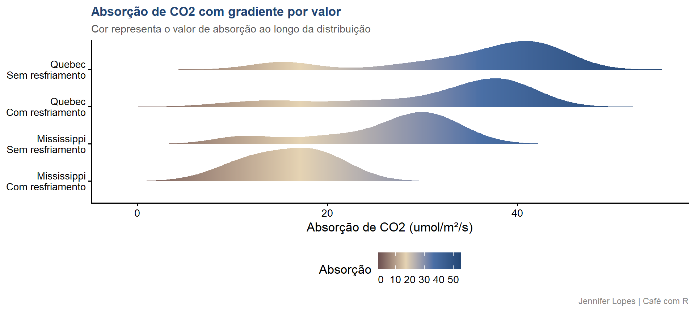
Interpretação: ridgeline com gradiente
O que o gradiente adiciona à leitura:
- A cor mapeia o valor de absorção diretamente na curva. Regiões escuras (azul) indicam alta absorção. Regiões claras (marrom) indicam baixa absorção.
- Com o gradiente, é possível ver onde cada grupo concentra seus valores sem precisar comparar posições no eixo x
- Para Quebec sem resfriamento, a maior parte da curva está em azul: a maioria das observações está em valores altos
- Para Mississippi, a maior parte da curva está em marrom e bege: concentração em valores baixos
after_stat(x) mapeia o valor do eixo x como variável de preenchimento, calculado internamente pelo ggplot2 após a estimativa de densidade.
Código: ridgeline com pontos individuais
co2 |>
mutate(grupo = paste(Type, Treatment, sep = "\n")) |>
ggplot(aes(x = uptake, y = grupo, fill = Type)) +
geom_density_ridges(
alpha = 0.7, scale = 0.9,
color = "white",
jittered_points = TRUE,
point_size = 1.5,
point_alpha = 0.5,
position = position_raincloud(
adjust_vlines = TRUE)) +
scale_fill_manual(values = c(
"Quebec" = cores_cafe["azul_escuro"],
"Mississippi" = cores_cafe["marrom"])) +
labs(
title = "Absorção de CO2 com observações individuais",
subtitle = "Pontos representam cada planta individualmente",
x = "Absorção de CO2 (umol/m²/s)",
y = NULL,
caption = "Jennifer Lopes | Café com R") +
tema +
theme(legend.position = "none")Gráfico: ridgeline com pontos individuais
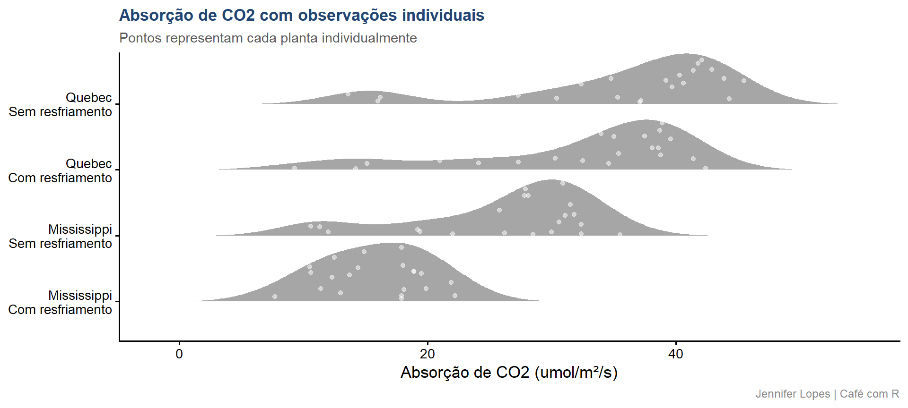
Com jittered_points = TRUE, cada observação aparece como um ponto abaixo da curva. Isso confirma que a densidade estimada reflete dados reais, não artefatos da suavização.
Limite técnico do ridgeline
Important
Atenção: grupos com poucos dados produzem curvas de densidade artificialmente suaves que não refletem a distribuição real. O ggplot2 emite um aviso quando o número de observações é menor que 30.
Com o CO2, cada combinação de Type e Treatment tem apenas 21 observações. As curvas são interpretativas, não definitivas. Adicionar os pontos individuais com jittered_points = TRUE é uma boa prática para transparência.
Bloco 4
Boxplot com Jitter
Conceito: boxplot com jitter
O jitter adiciona uma dispersão horizontal aleatória aos pontos para evitar sobreposição. Quando múltiplas observações têm o mesmo valor ou valores muito próximos, geom_point() as empilha exatamente na mesma posição, tornando-as invisíveis.
geom_jitter()é equivalente ageom_point(position = position_jitter())- O eixo y permanece no valor real da observação
- O eixo x é deslocado aleatoriamente dentro de uma largura controlada pelo parâmetro
width - O jitter é reproduzível quando combinado com
set.seed()
Como interpretar um boxplot com jitter
- Cada ponto representa uma observação individual
- A posição vertical do ponto é o valor real da variável
- A posição horizontal é aleatória e não tem significado
- A densidade de pontos em uma região indica onde se concentram as observações
- O boxplot por trás fornece o resumo de cinco números
- O losango da média permite comparar posição relativa com a mediana
Código: boxplot com jitter básico
set.seed(42)
co2 |>
ggplot(aes(x = Type, y = uptake, fill = Type)) +
geom_boxplot(
alpha = 0.5, width = 0.4,
outlier.shape = NA) +
geom_jitter(
width = 0.15, alpha = 0.6,
size = 1.8,
color = cores_cafe["azul_escuro"]) +
scale_fill_manual(values = c(
"Quebec" = cores_cafe["azul_claro"],
"Mississippi" = cores_cafe["marrom"])) +
labs(
title = "Absorção de CO2 por origem",
subtitle = "Cada ponto representa uma observação individual",
x = NULL, y = "Absorção de CO2 (umol/m²/s)",
caption = "Jennifer Lopes | Café com R") +
tema +
theme(legend.position = "none")Gráfico: boxplot com jitter básico
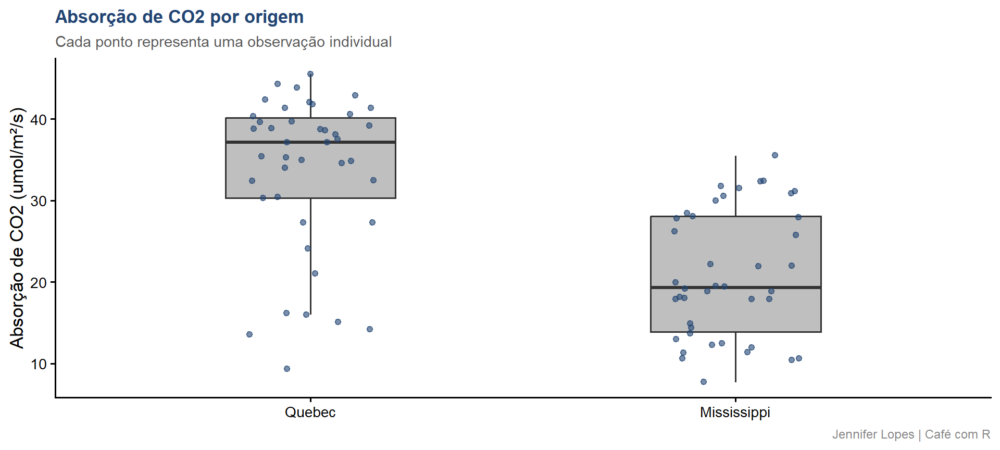
Interpretação: boxplot com jitter básico
O que os pontos revelam sobre o CO2:
- Quebec tem pontos distribuídos amplamente, com concentração visível entre 30 e 45 umol/m²/s. Nenhuma observação abaixo de 10.
- Mississippi tem pontos muito concentrados na faixa inferior (5 a 25 umol/m²/s). Há alguns pontos dispersos acima de 30, visíveis como outliers no boxplot.
- O jitter torna evidente que a dispersão de Quebec é estruturada, não aleatória. Os pontos se agrupam em faixas que correspondem às concentrações de CO2 do experimento.
Código: jitter ajustado com cor por tratamento
set.seed(42)
co2 |>
ggplot(aes(x = Type, y = uptake, fill = Type)) +
geom_boxplot(
alpha = 0.4, width = 0.45,
outlier.shape = NA) +
geom_jitter(
aes(color = Treatment),
width = 0.18, alpha = 0.75,
size = 2.2) +
scale_fill_manual(values = c(
"Quebec" = cores_cafe["azul_claro"],
"Mississippi" = cores_cafe["marrom"])) +
scale_color_manual(values = c(
"Sem resfriamento" = cores_cafe["azul_escuro"],
"Com resfriamento" = cores_cafe["bege"]),
name = "Tratamento") +
labs(
title = "Absorção por origem — pontos coloridos por tratamento",
subtitle = "Cor dos pontos indica o tratamento aplicado",
x = NULL, y = "Absorção de CO2 (umol/m²/s)",
caption = "Jennifer Lopes | Café com R") +
temaGráfico: jitter com cor por tratamento
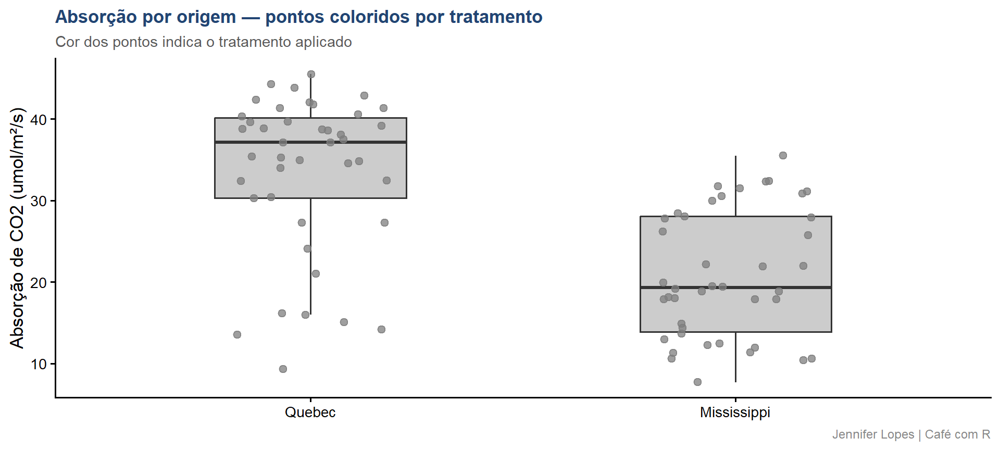
Código: boxplot + jitter + média
set.seed(42)
co2 |>
ggplot(aes(x = Type, y = uptake, fill = Type)) +
geom_boxplot(
alpha = 0.45, width = 0.4,
outlier.shape = NA) +
geom_jitter(
width = 0.15, alpha = 0.55,
size = 1.8,
color = cores_cafe["azul_escuro"]) +
stat_summary(
fun = mean, geom = "point",
shape = 18, size = 4,
color = cores_cafe["marrom"]) +
scale_fill_manual(values = c(
"Quebec" = cores_cafe["azul_claro"],
"Mississippi" = cores_cafe["bege"])) +
labs(
title = "Absorção de CO2 por origem",
subtitle = "Caixa = IQR | Pontos = observações | Losango = média",
x = NULL, y = "Absorção de CO2 (umol/m²/s)",
caption = "Jennifer Lopes | Café com R") +
tema +
theme(legend.position = "none")Gráfico: boxplot + jitter + média
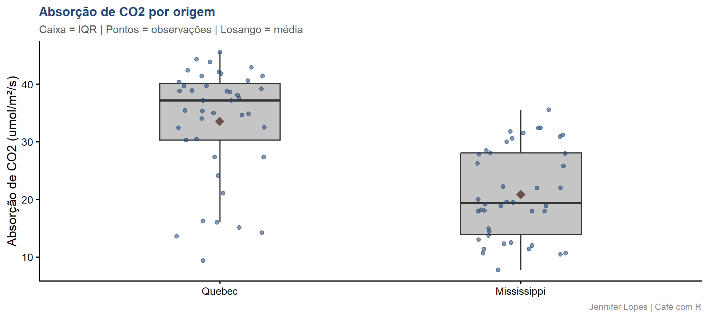
Interpretação: o trio completo
O que cada camada acrescenta:
- Boxplot: mediana, IQR e amplitude. Leitura rápida de posição central e dispersão.
- Jitter: confirma que a distribuição de Quebec é estruturada em bandas, reflexo das concentrações de CO2 testadas no experimento (95, 175, 250, 350, 500, 675, 1000 mL/L).
- Losango (média): para Quebec, a média está abaixo da mediana, confirmando assimetria negativa. Para Mississippi, média e mediana estão próximas, indicando distribuição mais simétrica.
Important
Atenção: outlier.shape = NA remove os outliers do boxplot quando geom_jitter() já está presente. Sem isso, os outliers aparecem duplicados: uma vez no boxplot e uma vez como ponto no jitter.
Bloco 5
Comparação direta
Código: os três gráficos com patchwork
set.seed(42)
p_violin <- co2 |>
ggplot(aes(x = Type, y = uptake, fill = Type)) +
geom_violin(alpha = 0.75, color = "white") +
geom_boxplot(width = 0.1, fill = "white", outlier.shape = NA) +
scale_fill_manual(values = c(
"Quebec" = cores_cafe["azul_claro"],
"Mississippi" = cores_cafe["marrom"])) +
labs(title = "Violin", x = NULL,
y = "Absorção (umol/m²/s)",
caption = "Jennifer Lopes | Café com R") +
tema + theme(legend.position = "none")
p_ridge <- co2 |>
mutate(grupo = paste(Type, Treatment, sep = "\n")) |>
ggplot(aes(x = uptake, y = grupo, fill = Type)) +
geom_density_ridges(alpha = 0.75, scale = 0.9, color = "white") +
scale_fill_manual(values = c(
"Quebec" = cores_cafe["azul_claro"],
"Mississippi" = cores_cafe["marrom"])) +
labs(title = "Ridgeline", x = "Absorção (umol/m²/s)", y = NULL) +
tema + theme(legend.position = "none")
p_jitter <- co2 |>
ggplot(aes(x = Type, y = uptake, fill = Type)) +
geom_boxplot(alpha = 0.45, width = 0.4, outlier.shape = NA) +
geom_jitter(width = 0.15, alpha = 0.55, size = 1.8,
color = cores_cafe["azul_escuro"]) +
scale_fill_manual(values = c(
"Quebec" = cores_cafe["azul_claro"],
"Mississippi" = cores_cafe["marrom"])) +
labs(title = "Boxplot com Jitter", x = NULL, y = NULL) +
tema + theme(legend.position = "none")
p_violin | p_ridge | p_jitterGráfico: os três lado a lado
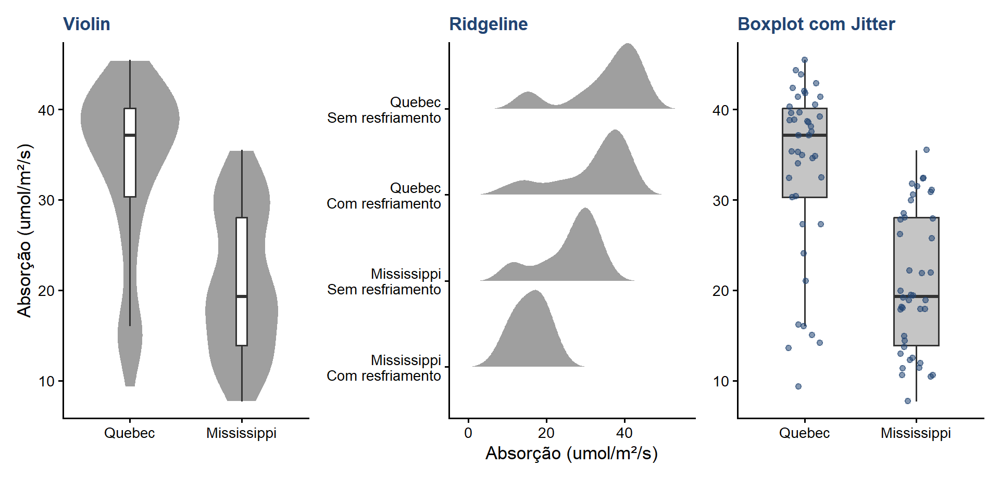
Interpretação comparada
O que cada gráfico revelou que os outros não revelaram:
Violin: revelou que Quebec tem distribuição com cauda inferior extensa. Não é visível no boxplot e é difícil de ler no ridgeline com quatro grupos.
Ridgeline: revelou o efeito do tratamento de resfriamento dentro de cada origem de forma simultânea. Comparar quatro grupos ao mesmo tempo seria impossível com violin sem sobreposição visual excessiva.
Boxplot com jitter: revelou a estrutura em bandas de Quebec, reflexo direto das concentrações de CO2 testadas no experimento. Nenhum dos outros gráficos tornava isso tão evidente.
Tabela de decisão
| Pergunta analítica | Gráfico indicado |
|---|---|
| Qual é a forma da distribuição? Há bimodalidade? | Violin |
| Como comparar muitos grupos simultaneamente? | Ridgeline |
| Quantas observações existem? Onde estão concentradas? | Boxplot com jitter |
| A distribuição é simétrica? Onde está a média em relação à mediana? | Violin + boxplot interno |
| Existe estrutura nos dados além da tendência central? | Boxplot com jitter |
| Como o valor de uma variável se distribui ao longo de grupos ordenados? | Ridgeline |
Referências
- Documentação
ggplot2: ggplot2.tidyverse.org - Documentação
ggridges: wilkelab.org/ggridges - R Graph Gallery — Violin: r-graph-gallery.com/violin.html
- R Graph Gallery — Ridgeline: r-graph-gallery.com/ridgeline-plot.html
- From Data to Viz: data-to-viz.com
Obrigada!

Continue praticando e explorando!
Esta aula é parte do projeto Café com R. É open source. Use, compartilhe e adapte.
Siga o Café com R
Que cada gole desperte uma nova ideia.
Que cada script abra uma nova conversa.
Que o Café com R se torne um ponto de encontro nosso.

Jennifer Lopes | Café com R